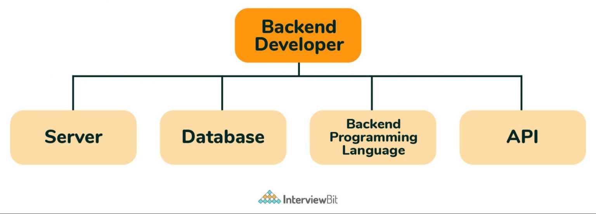

Un développeur back-end est un professionnel spécialisé dans la gestion de la logique serveur, des bases de données et de la performance d'une application web. Contrairement au développeur front-end, qui s'occupe de l'interface utilisateur visible, le développeur back-end travaille dans les coulisses pour gérer le traitement des données, les API, la sécurité et l'intégration avec d'autres systèmes. Il utilise des langages comme Python, Ruby, PHP, Java, ou Node.js, et manipule souvent des bases de données telles que MySQL, PostgreSQL, ou MongoDB. Le rôle du développeur back-end est crucial pour assurer que les données sont correctement stockées, sécurisées et récupérées, et que les fonctionnalités du site fonctionnent de manière fluide. Il collabore étroitement avec les développeurs front-end pour relier les éléments visuels aux processus côté serveur.
|  |